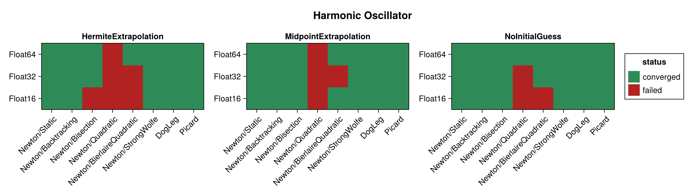
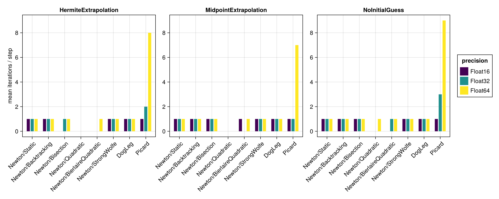
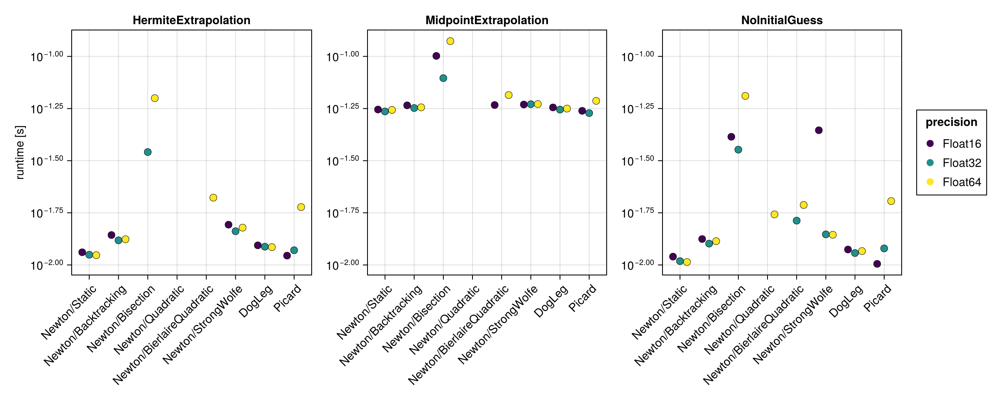
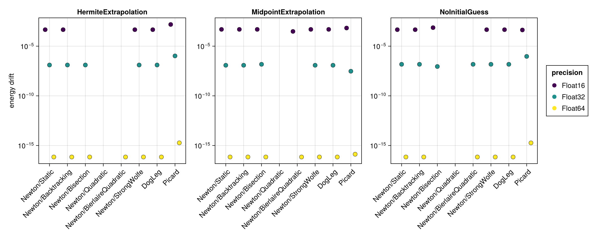
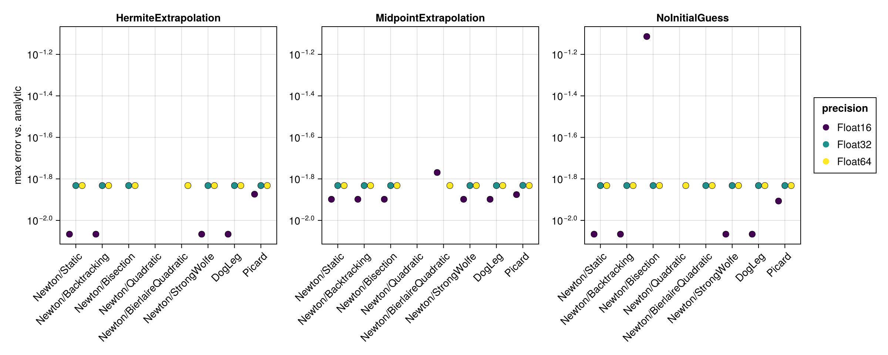

Harmonic Oscillator
The harmonic oscillator is a linear problem ($\ddot{x} = -k\,x$). Newton's method therefore solves the implicit midpoint equations exactly in a single iteration, which makes this example a useful baseline: differences between the solver configurations are dominated by convergence behaviour and floating point precision rather than by nonlinearity.
The benchmark below is regenerated at documentation build time with a single, fast timing pass. See the driver script scripts/harmonic_oscillator.jl for accurate BenchmarkTools measurements.
using SolverBenchmark
spec = harmonic_oscillator_spec(timespan = (0.0, 100.0), timestep = 0.1)
df = run_benchmark(spec; timing = :quick, verbose = false, quiet = true)Convergence
Which combinations reached the solver tolerance at every time step:
plot_convergence(df; title = "Harmonic Oscillator")
Nonlinear iterations
Mean number of nonlinear-solver iterations per time step (converged runs only):
plot_iterations(df)
Run time
plot_runtime(df)
Energy drift
Drift of the conserved energy $|H(t_\text{end}) - H(0)|$ — a proxy for the achievable accuracy at each precision:
plot_energy_drift(df)
Accuracy
Maximum error against the analytic solution:
plot_accuracy(df)
Discussion
- Because the problem is linear, the implicit midpoint equations are linear too, so Newton converges in exactly one iteration per step for every line search that converges (
Static,Backtracking,Bisection,StrongWolfe), as doesDogLeg. The choice of line search is therefore essentially irrelevant to the iteration count here. - The
Quadraticline search is fragile on this problem (it fails to converge at several precisions), andBierlaireQuadraticfails atFloat16andFloat32: their bracketing logic is ill-suited to a problem where the full Newton step is already exact. Picard(a fixed-point iteration) converges but needs many more iterations (≈ 8 per step atFloat64) and is by far the slowest solver.- Precision sets the achievable accuracy: the energy is conserved to roughly machine precision (≈
1e-17atFloat64,1e-8atFloat32,1e-4atFloat16), whereas the error against the analytic solution (≈5e-4) is set by the $\mathcal{O}(\Delta t^2)$ midpoint discretization and is essentially precision-independent down toFloat32. - The initial guess does not affect Newton (one exact step regardless), but it does affect
Picard:MidpointExtrapolationgives the fewest iterations andNoInitialGuess(previous step) the most.
Results table
markdown_table(summary_table(df))| precision | solver_label | initial_guess | converged | iterations_mean | runtime_s | max_residual | energy_drift | accuracy |
|---|---|---|---|---|---|---|---|---|
| Float16 | Newton/Static | HermiteExtrapolation | ✓ | 1 | 0.0115 | 0 | 0.000458 | 0.00858 |
| Float16 | Newton/Static | MidpointExtrapolation | ✓ | 1 | 0.0556 | 0 | 0.000488 | 0.0126 |
| Float16 | Newton/Static | NoInitialGuess | ✓ | 1 | 0.011 | 0 | 0.000458 | 0.00858 |
| Float16 | Newton/Backtracking | HermiteExtrapolation | ✓ | 1 | 0.0139 | 0 | 0.000458 | 0.00858 |
| Float16 | Newton/Backtracking | MidpointExtrapolation | ✓ | 1 | 0.0583 | 0 | 0.000488 | 0.0126 |
| Float16 | Newton/Backtracking | NoInitialGuess | ✓ | 1 | 0.0133 | 0 | 0.000458 | 0.00858 |
| Float16 | Newton/Bisection | HermiteExtrapolation | ✗ | 139 | 4.93 | 0.00928 | — | — |
| Float16 | Newton/Bisection | MidpointExtrapolation | ✓ | 1 | 0.101 | 0 | 0.000488 | 0.0126 |
| Float16 | Newton/Bisection | NoInitialGuess | ✓ | 1 | 0.0412 | 0.00624 | 0.000732 | 0.0769 |
| Float16 | Newton/Quadratic | HermiteExtrapolation | ✗ | — | — | — | — | — |
| Float16 | Newton/Quadratic | MidpointExtrapolation | ✗ | — | — | — | — | — |
| Float16 | Newton/Quadratic | NoInitialGuess | ✗ | — | — | — | — | — |
| Float16 | Newton/BierlaireQuadratic | HermiteExtrapolation | ✗ | 437 | 1.99 | 0.0226 | — | — |
| Float16 | Newton/BierlaireQuadratic | MidpointExtrapolation | ✓ | 1 | 0.0585 | 0.000244 | 0.000305 | 0.017 |
| Float16 | Newton/BierlaireQuadratic | NoInitialGuess | ✗ | 2 | 0.0136 | 0.0125 | — | — |
| Float16 | Newton/StrongWolfe | HermiteExtrapolation | ✓ | 1 | 0.0156 | 0 | 0.000458 | 0.00858 |
| Float16 | Newton/StrongWolfe | MidpointExtrapolation | ✓ | 1 | 0.0588 | 0 | 0.000488 | 0.0126 |
| Float16 | Newton/StrongWolfe | NoInitialGuess | ✓ | 1 | 0.0442 | 0 | 0.000458 | 0.00858 |
| Float16 | DogLeg | HermiteExtrapolation | ✓ | 1 | 0.0124 | 0 | 0.000458 | 0.00858 |
| Float16 | DogLeg | MidpointExtrapolation | ✓ | 1 | 0.0569 | 0 | 0.000488 | 0.0126 |
| Float16 | DogLeg | NoInitialGuess | ✓ | 1 | 0.0119 | 0 | 0.000458 | 0.00858 |
| Float16 | Picard | HermiteExtrapolation | ✓ | 1 | 0.0111 | 0.000598 | 0.00153 | 0.0134 |
| Float16 | Picard | MidpointExtrapolation | ✓ | 1 | 0.0548 | 0 | 0.000671 | 0.0133 |
| Float16 | Picard | NoInitialGuess | ✓ | 1 | 0.0101 | 0.000646 | 0.000427 | 0.0124 |
| Float32 | Newton/Static | HermiteExtrapolation | ✓ | 1 | 0.0112 | 2.08e-09 | 1.27e-07 | 0.0147 |
| Float32 | Newton/Static | MidpointExtrapolation | ✓ | 1 | 0.0545 | 2.08e-09 | 1.19e-07 | 0.0147 |
| Float32 | Newton/Static | NoInitialGuess | ✓ | 1 | 0.0104 | 2.08e-09 | 1.49e-07 | 0.0147 |
| Float32 | Newton/Backtracking | HermiteExtrapolation | ✓ | 1 | 0.0131 | 2.08e-09 | 1.27e-07 | 0.0147 |
| Float32 | Newton/Backtracking | MidpointExtrapolation | ✓ | 1 | 0.0566 | 2.08e-09 | 1.19e-07 | 0.0147 |
| Float32 | Newton/Backtracking | NoInitialGuess | ✓ | 1 | 0.0127 | 2.08e-09 | 1.49e-07 | 0.0147 |
| Float32 | Newton/Bisection | HermiteExtrapolation | ✓ | 1 | 0.0348 | 2.08e-09 | 1.27e-07 | 0.0147 |
| Float32 | Newton/Bisection | MidpointExtrapolation | ✓ | 1 | 0.0787 | 1.92e-09 | 1.49e-07 | 0.0147 |
| Float32 | Newton/Bisection | NoInitialGuess | ✓ | 1 | 0.0357 | 2.33e-09 | 8.94e-08 | 0.0147 |
| Float32 | Newton/Quadratic | HermiteExtrapolation | ✗ | 650 | 5.11 | 4.44e-05 | — | — |
| Float32 | Newton/Quadratic | MidpointExtrapolation | ✗ | 706 | 5.59 | 1.11e-05 | — | — |
| Float32 | Newton/Quadratic | NoInitialGuess | ✗ | 694 | 5.65 | 1.25e-05 | — | — |
| Float32 | Newton/BierlaireQuadratic | HermiteExtrapolation | ✗ | 688 | 2.94 | 4.44e-05 | — | — |
| Float32 | Newton/BierlaireQuadratic | MidpointExtrapolation | ✗ | 709 | 3 | 1.11e-05 | — | — |
| Float32 | Newton/BierlaireQuadratic | NoInitialGuess | ✓ | 1 | 0.0163 | 2.08e-09 | 1.49e-07 | 0.0147 |
| Float32 | Newton/StrongWolfe | HermiteExtrapolation | ✓ | 1 | 0.0145 | 2.08e-09 | 1.27e-07 | 0.0147 |
| Float32 | Newton/StrongWolfe | MidpointExtrapolation | ✓ | 1 | 0.059 | 2.08e-09 | 1.19e-07 | 0.0147 |
| Float32 | Newton/StrongWolfe | NoInitialGuess | ✓ | 1 | 0.014 | 2.08e-09 | 1.49e-07 | 0.0147 |
| Float32 | DogLeg | HermiteExtrapolation | ✓ | 1 | 0.0122 | 2.08e-09 | 1.27e-07 | 0.0147 |
| Float32 | DogLeg | MidpointExtrapolation | ✓ | 1 | 0.0556 | 2.08e-09 | 1.19e-07 | 0.0147 |
| Float32 | DogLeg | NoInitialGuess | ✓ | 1 | 0.0114 | 2.08e-09 | 1.49e-07 | 0.0147 |
| Float32 | Picard | HermiteExtrapolation | ✓ | 2 | 0.0118 | 3.92e-07 | 1.04e-06 | 0.0147 |
| Float32 | Picard | MidpointExtrapolation | ✓ | 1 | 0.0535 | 3.91e-07 | 2.98e-08 | 0.0147 |
| Float32 | Picard | NoInitialGuess | ✓ | 3 | 0.012 | 7.81e-07 | 9.31e-07 | 0.0147 |
| Float64 | Newton/Static | HermiteExtrapolation | ✓ | 1 | 0.0111 | 3.88e-18 | 6.94e-17 | 0.0147 |
| Float64 | Newton/Static | MidpointExtrapolation | ✓ | 1 | 0.0554 | 3.88e-18 | 6.94e-17 | 0.0147 |
| Float64 | Newton/Static | NoInitialGuess | ✓ | 1 | 0.0103 | 3.88e-18 | 6.94e-17 | 0.0147 |
| Float64 | Newton/Backtracking | HermiteExtrapolation | ✓ | 1 | 0.0133 | 3.88e-18 | 6.94e-17 | 0.0147 |
| Float64 | Newton/Backtracking | MidpointExtrapolation | ✓ | 1 | 0.057 | 3.88e-18 | 6.94e-17 | 0.0147 |
| Float64 | Newton/Backtracking | NoInitialGuess | ✓ | 1 | 0.013 | 3.88e-18 | 6.94e-17 | 0.0147 |
| Float64 | Newton/Bisection | HermiteExtrapolation | ✓ | 1 | 0.0631 | 3.88e-18 | 6.94e-17 | 0.0147 |
| Float64 | Newton/Bisection | MidpointExtrapolation | ✓ | 1 | 0.118 | 3.88e-18 | 6.94e-17 | 0.0147 |
| Float64 | Newton/Bisection | NoInitialGuess | ✓ | 1 | 0.0647 | 5.2e-18 | 0 | 0.0147 |
| Float64 | Newton/Quadratic | HermiteExtrapolation | ✗ | 114 | 0.928 | 2.32e-11 | — | — |
| Float64 | Newton/Quadratic | MidpointExtrapolation | ✗ | 239 | 1.97 | 9.29e-11 | — | — |
| Float64 | Newton/Quadratic | NoInitialGuess | ✓ | 1 | 0.0175 | 3.88e-18 | 0 | 0.0147 |
| Float64 | Newton/BierlaireQuadratic | HermiteExtrapolation | ✓ | 1 | 0.021 | 3.88e-18 | 6.94e-17 | 0.0147 |
| Float64 | Newton/BierlaireQuadratic | MidpointExtrapolation | ✓ | 1 | 0.0653 | 3.88e-18 | 6.94e-17 | 0.0147 |
| Float64 | Newton/BierlaireQuadratic | NoInitialGuess | ✓ | 1 | 0.0194 | 3.88e-18 | 6.94e-17 | 0.0147 |
| Float64 | Newton/StrongWolfe | HermiteExtrapolation | ✓ | 1 | 0.0151 | 3.88e-18 | 6.94e-17 | 0.0147 |
| Float64 | Newton/StrongWolfe | MidpointExtrapolation | ✓ | 1 | 0.0591 | 3.88e-18 | 6.94e-17 | 0.0147 |
| Float64 | Newton/StrongWolfe | NoInitialGuess | ✓ | 1 | 0.014 | 3.88e-18 | 6.94e-17 | 0.0147 |
| Float64 | DogLeg | HermiteExtrapolation | ✓ | 1 | 0.0122 | 3.88e-18 | 6.94e-17 | 0.0147 |
| Float64 | DogLeg | MidpointExtrapolation | ✓ | 1 | 0.0562 | 3.88e-18 | 6.94e-17 | 0.0147 |
| Float64 | DogLeg | NoInitialGuess | ✓ | 1 | 0.0117 | 3.88e-18 | 6.94e-17 | 0.0147 |
| Float64 | Picard | HermiteExtrapolation | ✓ | 8 | 0.0189 | 7.67e-16 | 1.84e-15 | 0.0147 |
| Float64 | Picard | MidpointExtrapolation | ✓ | 7 | 0.0612 | 7.63e-16 | 1.32e-16 | 0.0147 |
| Float64 | Picard | NoInitialGuess | ✓ | 9 | 0.0202 | 1.53e-15 | 1.82e-15 | 0.0147 |